Fuzz and load test your JVM web apps — unmodified, in Kubernetes.
Instrument a running app with a BasquinTarget — no rebuild, no
image changes. Run a coverage-guided fuzz campaign to discover the inputs
that stress it, then replay those exact inputs under load. And because the
bug oracle is availability — latency budgets, heap retention,
thread/executor leaks — you catch the apps that don't crash but degrade.

Instrument once, then run campaigns
Two custom resources in group basquin.dev/v1alpha1. You
instrument an app once, then run any number of bounded tests against it.
BasquinTarget — instrument
Patches an unmodified app Deployment to load the agents via an initContainer + shared volume. Fully reversible — deleting it restores the Deployment byte-for-byte.
BasquinCampaign — test
Drives the instrumented target and aggregates results into status. Runs in one of two
modes: explore (coverage-guided fuzzing) or load (corpus replay
at volume).
| Mode | What it does | Bounded by |
|---|---|---|
explore |
Coverage-guided fuzzing — keeps inputs that reach new code, emits the interesting ones as a corpus | iterations or duration |
load |
Replays that saved corpus at a fixed concurrency, reporting throughput and latency percentiles | duration |
Fuzz to discover the interesting states, then hammer those
states under load. Install with Helm, drive it with the basquin CLI —
see the operator guide.
Why it's different
Fuzzers like Jazzer and JQF are excellent, but their oracle is "did it throw / crash." Load tools like k6 and Gatling measure throughput but know nothing about what's happening inside the JVM. Basquin sits in the gap — and the corpus carries from fuzzing straight into the load test.
Availability is the bug
An iteration is interesting if it exceeds a latency budget, grows the heap, or leaks a thread/executor — not only if it throws.
Cleanliness enforced, not assumed
Each iteration runs inside strict begin/end boundaries; leaked non-daemon threads and un-shut executors are detected and reported with stacks. Contamination becomes obvious.
Works on apps you can't change
A Tomcat valve wraps every request of an unmodified third-party WAR — no code edits, no
repackaging — and one namespace-free jar runs on Tomcat 9 (javax) and 10+
(jakarta).
Signal quality is the one rule
The project has exactly one bar for what ships: a change has to improve
iteration cleanliness, reproducibility, or
signal quality — find real availability pathologies, faster. Crashes are
real crashes: a target declares its expected input rejections via a
CrashClassifier, so a parser throwing on bad input is counted as
rejected, not a crash. Only genuine faults — an unhandled exception, a 5xx — count.
What it found in JPetStore, unmodified
Running inside JPetStore's JVM via the valve, with no changes to the app:
| Signal | Example |
|---|---|
| Latency spike | cold first-catalog request 531ms (budget 20ms) |
| Heap growth | up to 44MB allocated on a single request |
| Per-request cost | steady multi-hundred-KB retention across catalog routes |

What's in the box
Availability invariants
Latency, heap-delta, and thread-delta thresholds, each with hard-fail or soft-signal modes and stack evidence on violation.
Coverage-guided exploration
A JaCoCo agent runs in the target's JVM; the driver reads real coverage over the wire and keeps the inputs that reach new code. Routes and value structure are data — a request grammar, not code.
JVMTI native agent
Event-driven thread lifecycle tracking (ThreadStart/ThreadEnd) — no polling, no
safepoint stack walks — with a ThreadMXBean fallback. One jar, JDK 17 & 21.
Tomcat valve
Wraps every request of an unmodified WAR. A single namespace-free jar runs on both
javax.servlet and jakarta.servlet Tomcat lines.
Decoupled web dashboard
A standalone process — never embedded in a driver. Any number of drivers push status and
findings, keyed by campaign id, for a fleet view with drill-down. JDK
httpserver, binds 127.0.0.1 by default.
Kubernetes operator
Two CRDs, namespaced RBAC (never a ClusterRole), reversible in-place
instrumentation of unmodified images, and a per-campaign dashboard. Installed with Helm,
driven by the basquin CLI.
Load / soak mode
Replays the corpus a fuzz run emitted at a fixed concurrency for a duration, reporting throughput and p50/p90/p99/max latency, plus heap and thread drift across the run.
Point it at your app
Install the operator with Helm and instrument a running Deployment — no rebuild — then fuzz it and replay the findings under load. The harness also runs standalone if you're not on Kubernetes.